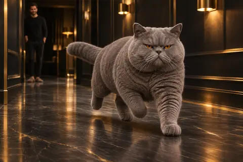

Koci Notatnik / Krótkie opowieści
Kocia aktywność · 2 min czytania23:47. Uruchamiam napęd. Personel miał inne plany.
Człowiek zgasił światło i powiedział „idziemy spać”. Kochani, uwielbiam, gdy przedstawia propozycję tak, jakby była decyzją. O 23:47 rozpocząłem kwalifikacje do mistrzostw korytarza.

Dlaczego kot nagle biega po mieszkaniu?
Koty mają naturalne krótkie zrywy aktywności. Takie sprinty, zwane zoomies, mogą być zabawą i sposobem wykorzystania energii; warto uwzględnić ruch w codziennej rutynie.
Drapieżnik po godzinach
Przez dzień odpoczywałem z przerwą na obiad i regenerację po obiedzie. Wieczorem odkryłem, że łapy są sprawne, a mieszkanie ma kilka zakrętów. Szkoda zmarnować infrastrukturę.
Ruszyłem. Nawrót. Korytarz. Dywan. Hamowanie. Człowiek pojawił się w drzwiach z fryzurą, która sugerowała trudny start sezonu.
— Co ty wyprawiasz?! — Sport, kochany. To ta rzecz, o której mówisz w styczniu.
Następnego wieczoru zaprosił mnie do zabawy wcześniej. Polowaliśmy na zabawkę, robiąc przerwy. Potem mogłem spokojnie odpocząć. Okazuje się, że personel może pomóc, gdy przestaje liczyć na samoistne rozładowanie właściciela.
Kiedy usiadł zmęczony, spojrzałem z uznaniem. Przez całe osiem minut ruszał wędką i nie zajrzał do telefonu. W tym domu też czasem zdarzają się rekordy.
Co ma zapamiętać Twój człowiek
- Wprowadzaj krótkie, regularne zabawy dopasowane do możliwości kota.
- Usuń przeszkody, śliskie pułapki i kruche przedmioty z trasy.
- Gwałtowne zmiany, ból lub niepokój skonsultuj z weterynarzem; nie zakładaj, że to zawsze zabawa.